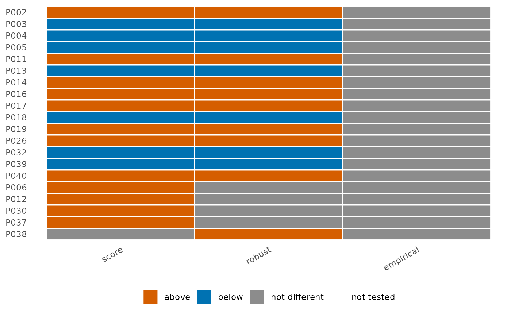

Collects the flags of several test() results (scenarios: other
statistics, variances, references, standardizations) for the providers
flagged in at least one of them, the "flags under alternatives" of a
measure report.
Arguments
- ...
test()results, named by scenario.- all_providers
keep every provider rather than those flagged at least once. Default
FALSE.
Value
A data frame of class pp_stability: provider, one column of
flags per scenario, and n_flagged. Its plot() method draws the
providers against the scenarios.
Examples
d <- sim_kecc(n_providers = 40, seed = 1)
pd <- pp_data(d, y = "y", x = c("x1", "x2", "x3"), provider = "provider",
patient = "patient", message = FALSE)
fit <- fit_logistic_fe(pd)
st <- flag_stability(score = test(fit, statistic = "score"),
robust = test(fit, statistic = "score", variance = "robust"),
empirical = test(fit, statistic = "score", variance = "robust",
null_model = "empirical"))
st
#> Flags under 3 scenarios: 20 providers (0 flagged under every scenario)
#> provider score robust empirical n_flagged
#> P002 1 1 0 2
#> P003 -1 -1 0 2
#> P004 -1 -1 0 2
#> P005 -1 -1 0 2
#> P011 1 1 0 2
#> P013 -1 -1 0 2
#> P014 1 1 0 2
#> P016 1 1 0 2
#> P017 1 1 0 2
#> P018 -1 -1 0 2
#> ... 10 more rows
plot(st)
